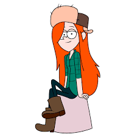
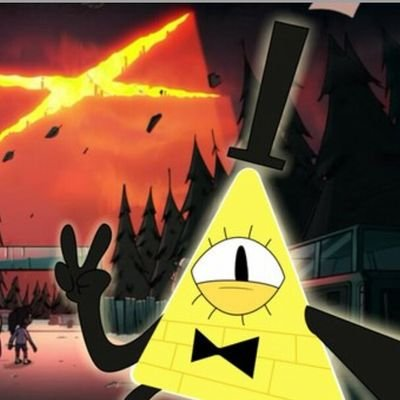
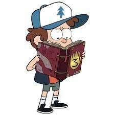

Действие разворачивается летом в вымышленном городке Гравити Фолз (Gravity Falls; буквально — «гравитация падает»; здесь использована игра слов — «Falls» (с англ. водопад) относительно часто встречается в американских топонимах) в штате Орегон , куда близнецы Диппер и Мэйбл Пайнс отправляются на каникулы к своему двоюродному дедушке Стэну (которого они зовут, по версиям различных переводчиков : дядя, дедушка или прадядя (английское grunkle — сокращение от словосочетания great/grand uncle — двоюродный дедушка).

Гравити Фолз (англ. Gravity Falls) — американский анимационный телевизионный сериал, созданный аниматором Алексом Хиршем для Disney Channel. Мультсериал повествует о близнецах Мэйбл и Диппере Пайнс, которые проводят летние каникулы в вымышленном городе Гравити Фолз, штата Орегон. Премьера состоялась 15 июня 2012 года на канале Disney Channel. 12 марта 2013 года был продлен на второй сезон, который стартовал 1 августа 2014 года на двух каналах Disney XD и Disney Channel. 20 ноября 2015 года Алекс Хирш заявил, что второй сезон будет его последним, а последний эпизод вышел 15 февраля 2016 года.

Стенфорд Пайнс

Вэнди Кордой

Билл Шифр
Стенли Пайнс
Мэйбл Пайнс

Диппер Пайнс
Гидеон Глифул
Он — владелец сувенирного магазина — «приманки для туристов» — «Хижина Чудес». Поначалу героям скучно , но вскоре они обнаруживают, что в городе происходит нечто сверхъестественное. Диппер случайно находит в лесу дневник под номером три, автор которого неизвестен . В нём подробно описываются аномалии Гравити Фолз. Диппер сразу решает узнать тайны странного городка и найти автора дневника, но на каждом шагу Диппера и Мэйбл подстерегает опасность. Окрестности Гравити Фолз полны таинственных мест, аномалий и странных существ.